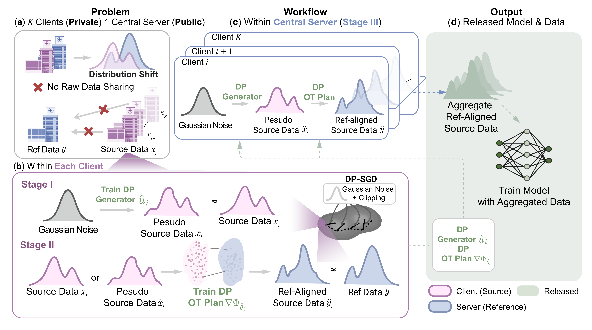
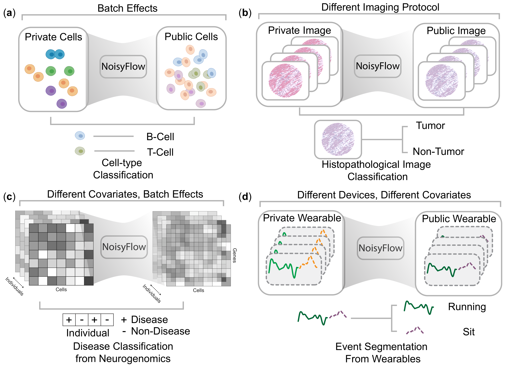

NoisyFlow
Privacy-preserving federated domain adaptation with transported synthetic data.
NoisyFlow trains local client generators, transports private source distributions into a limited target-reference domain, and evaluates target classifiers without centralizing source data.

Method
A staged experimental protocol for private domain adaptation.
NoisyFlow separates private source modeling, target-domain transport, and downstream evaluation so each assumption can be ablated without exposing client-level data.
Private source modeling
Source domains are represented locally by label-conditional generative models, providing synthetic client distributions for later analysis.
Reference-guided transport
Small labeled target-reference sets define transport maps that align private source representations with the target domain.
Comparative evaluation
Utility, alignment, and membership-inference risk are measured across Ref-only, Synth-only, and Ref+Synth training regimes.
Evaluation
Experiment surfaces for utility, privacy, and alignment.
NoisyFlow reports classifier utility, distributional alignment, privacy accounting, and attack diagnostics across Ref-only, Synth-only, and Ref+Synth regimes.
Shared reporting surfaces across baseline and synthetic-data regimes.
Differential privacy
Stage 1 and selected Stage 2 paths support Opacus DP-SGD, epsilon accounting, noisy label priors, and privacy-utility sweeps.
Transport options
Choose private-data transport, synthetic-only transport, or mixed real-plus-synthetic transport through YAML configuration.
Membership-inference tests
Loss-threshold, shadow-model, stage-level, and stage-shadow workflows are available for privacy stress tests.
Reproducible runs
Config-driven experiments cover smoke tests, publication settings, dataset preparation, sweeps, plotting, and baseline comparisons.
Results
Transported synthetic data improves target-domain training under small reference budgets.
Across synthetic mixtures, single-cell perturbation data, clinical-expression cohorts, pathology embeddings, and wearable windows, NoisyFlow consistently turns a small target reference into a stronger target-domain training set.
Few-shot PBMC target-reference accuracy
Privacy-utility sweep
Cross-domain target accuracy
Datasets
Benchmarks with documented reconstruction paths.
The data guide records required artifacts, download or preparation commands, split rules, schemas, seeds, and matching smoke configs.
Open the dataset guide